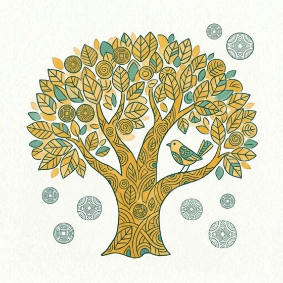
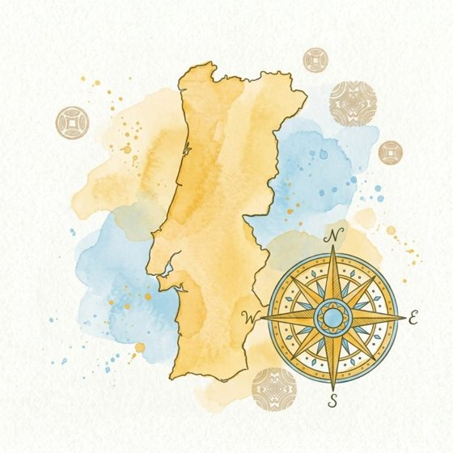
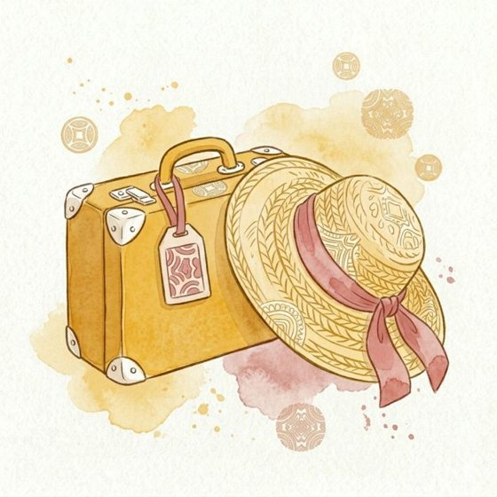
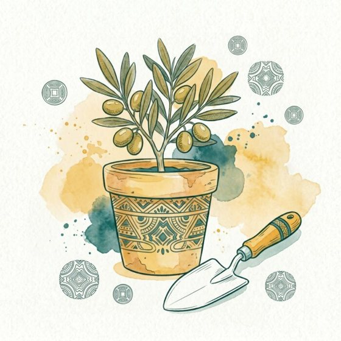

Jardins · Gardens
Choose a theme
Everything you need, organised by what matters to you.
Your materials are waiting inside, calibrated to your level. As you progress, we reassess you and unlock the next level across all themes.

Environment & nature
Portugal's landscapes, climate, flora, renewable energy, cork, and the industries rooted in the land.
Choose this theme →
Regions & geography
From the Minho to the Algarve: the regions, cities, and places that make Portugal what it is.
Choose this theme →
Tourism & travel
Beaches, monuments, villages, and the language you need to explore Portugal with confidence.
Choose this theme →
Industry & agriculture
Vineyards, olive groves, and plenty of fish: the land and the people who work it.
Choose this theme →